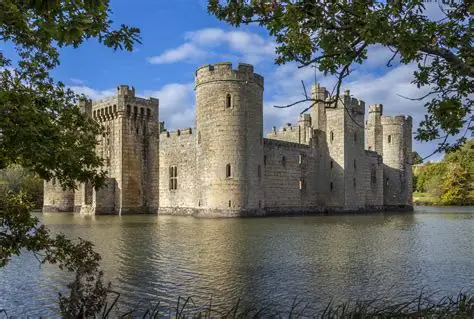

High Kingdom
Population: 1 million
There are not really any cities and a majority of the place is forests since everyone lives near the palace of the gods and only ‘chosen people’ are allowed to live there.
The main language there is Izen but most Mainlanders can write fluently in Faden as it is taught at school.

The High Kingdom is where the gods live and all the people there are people that the gods chose to live there. All the people there spend their days worshiping, entertaining and giving the gods the food they make. In return the gods provide them with safety and the stuff necessary for them to live happily and they provide them with electricity. Kingdomers look down on anyone who's is not one of them and everyone is expected to look up to them with respect. Everytime someone in the high kingdom dies the gods pick someone knew to replace then they could be from many ages but they usually pick who they believe would be the most interesting. Kingdomers aren’t allowed to have children so if they haven't had a child someone else will have extra to replace them. Kingdomers are only given the illusion of gratification and completion as everything is decided for them and even dreaming of a life other than they one they have can be dangerous. If someone declines a god's offer to join their country they will be killed or sent to the island of the lost. You are allowed to have friends but when two people are spending too much time together the gods find a way to pull them apart.